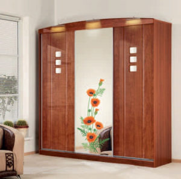

Чистка зеркала в домашних условиях
 Зеркало – это один из неотъемлемых элементов интерьера квартиры или дома, который позволяет визуально расширить помещение, сделать его
Зеркало – это один из неотъемлемых элементов интерьера квартиры или дома, который позволяет визуально расширить помещение, сделать его
более светлым за счет отражения естественного света. Чтобы зеркало выполняло возложенные на него функции, за ним нужен надлежащий уход.
Причины появления пятен и разводов на зеркалах
Появление пятен на поверхности зеркала может быть вызвано:
- попаданием грязи (частиц средств для волос, остатков жизнедеятельности насекомых, жировых пятен) и пыли на зеркало;
- применением некачественных моющих средств для чистки зеркал;
- использованием жесткой воды при мытье зеркал.
Для устранения пятен и разводов любого происхождения воспользуйтесь советами сотрудников компании «Домашние мастера».
Общие рекомендации по очистке зеркал
Если вы хотите качественно очистить поверхность зеркала и сохранить ее чистой надолго:
- при выборе химических чистящих средств отдавайте предпочтение средствам от известных производителей;
- для чистки зеркала выбирайте качественные салфетки из микрофибры, ткани без ворса и плотные бумажные полотенца;
- не используйте острые предметы без крайней необходимости, чтобы не повредить поверхностный слой.
Использование химических средств
Химические средства для чистки зеркал доступны и эффективны, их можно приобрести в любом магазине и удалить с их помощью любые загрязнения. Но при их использовании нужно соблюдать меры предосторожности, так как эти средства высокотоксичны, и могут вызвать головокружение или аллергические реакции.
При выборе химического средства отдайте предпочтение продуктам без спирта в составе. После распыления средства на зеркало следует вытереть поверхность сухой мягкой тканью без ворсинок или специальным скребком с резиновой насадкой.
Применение народных средств
Народные средства не менее эффективны, чем приобретенные в магазине, при этом они более безопасны и практически всегда найдутся под рукой. Выбор народного средства зависит от того, какого эффекта вы хотите добиться:
Для удаления пятен
Максимально эффективными средствами в данном случае будут:
- Спирт. Нанесите немного спирта на зеркальную поверхность и вытрите насухо салфеткой или бумажными полотенцами.
- Картофель. Разрежьте картофелину напополам, протрите срезом зеркало, смойте несколько раз кипяченой водой и вытрите досуха.
- Лук. Разрежьте луковицу напополам, срезом обработайте поверхность зеркала. После протрите зеркало сухой салфеткой, водой дополнительно протирать не нужно.
- Чай с солью. Одну чайную ложку соли растворите в стакане крепко заваренного чая, нанесите раствор на зеркало и удалите остатки капроновой тканью.
Для возвращения блеска
Используйте:
- Синьку. Водой с добавлением синьки протрите зеркала и вытрите их насухо салфеткой.
- Молоко. Смочите мягкую салфетку в молоке, протрите ней зеркало и насухо вытрите бумажным полотенцем.
Как убрать разводы на зеркале
Для устранения разводов воспользуйтесь следующим руководством:
- Очистите поверхность зеркала от грязи. Мягкой губкой или тканью, смоченной в мыльном растворе, протрите зеркало несколько раз.
- Смойте мыльный раствор губкой, а затем салфеткой из микрофибры. Чтобы на зеркале не оставались пятна от жесткой водопроводной воды, последний раз протрите зеркало салфеткой, смоченной в кипяченой воде.
- Остатки воды на зеркале просушите газетами (бумажными полотенцами) или салфеткой.
Если самостоятельно очистить зеркало вам не удалось, обращайтесь в компанию «Домашние мастера», сотрудники которой справятся с задачей любой сложности!